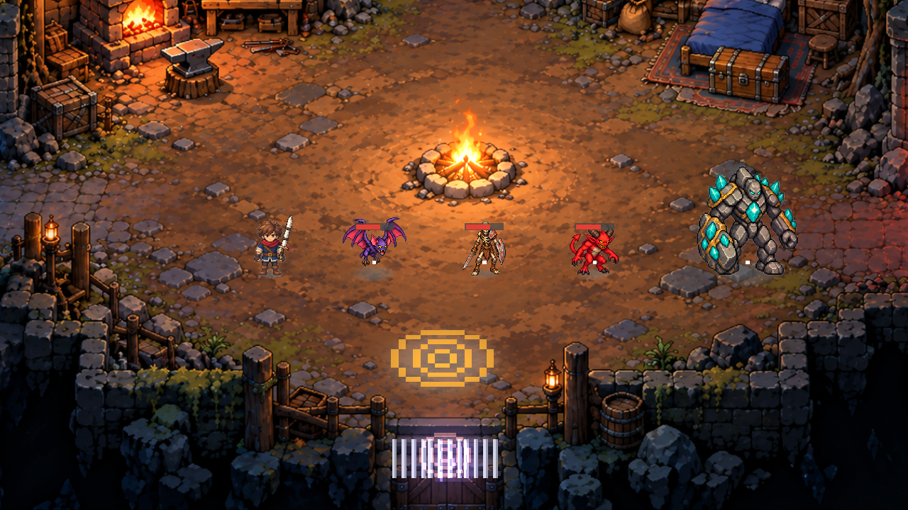
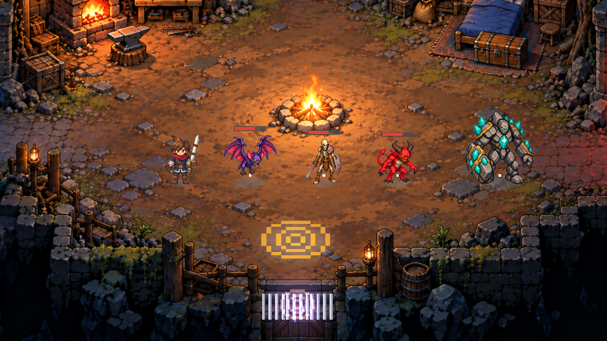

최신 변경: 골렘 +25%, 다른 보스 +15% 비교 →아래는 보스 확대 이전의 용사·잡몹 비교 기록입니다.
같은 장소·같은 카메라에서 비교한 실제 게임 화면. 배경 속에서 옷과 무기, 적의 실루엣이 더 잘 보이도록 조정했어요.


검 크기와 손잡이 위치, 걷기·구르기·잔상·사망 모습도 같은 비율로 맞췄어요.
용사와 같은 축소 방식을 몬스터·검에 적용해 가는 선의 떨림을 줄였어요.
체력 막대·공격 예고·기절 별은 그림의 높이와 자세를 따라가 머리를 가리지 않아요.
1280×720 · 카메라 115% · 두 화면 모두 같은 용사 시트 사용. 나란히 선 적들은 크기 비교용 배치이며 캠프에 실제로 적이 추가되지는 않습니다. 이동 경계·피격 원·공격 사거리와 바닥 위험 표시는 기존 월드 좌표를 유지합니다.
구현·검증 기록 · 이전 용사 외곽선 비교